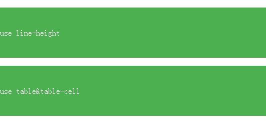
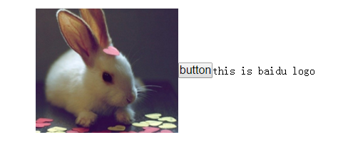

居中是前端开发当中一个经久不衰的话题，在实际开发过程当中也会遇到各种各样的居中显示问题，当然没有一种完美的解决方法，需要结合实际需求去取舍，最近找工作遇到了一些居中的问题，发觉自己掌握得并不是十分牢固，因此今天系统整理一下css居中的问题。
居中可以大致分为水平，垂直居中，对于具体的元素，inline/inline-block，block又会有不同的策略，考虑到浏览器兼容性的问题，同一种居中的需求还有不同的解决方案，下面就一一说明一下各种居中的策略和适用场景。
1.inline/inline-block居中
-
&.水平居中
对于这种情况，往往是比较简单的，水平居中在父元素运用text-align:center即可，或者使用flex布局，还可以使用table布局，当然使用最多的还是text-align:center，flex是css3的属性，因此兼容性不是很好，table一般也不适用此场景；
-
&.垂直居中
垂直居中要分两种情况，如果父元素高度不固定，那么设置padding将上下两个方向的内边距撑开就好，如果是父元素高度固定，那么除了使用flex新的属性外，还可以通过设置line-height等于父元素高度实现，还有一种方式就是使用display:table属性，具体看一下演示代码：
.container{height: 100px;
background-color: #4CAF50;
color: #fff;
margin: 1em 0;
}
.demo1 span{line-height: 100px;
}
.demo2{display: table;
width: 100%;
}
.demo2 span{display: table-cell;
vertical-align: middle;
}
<div class="demo1 container">
<span>use line-height</span>
<div class="demo2 container">
<span>use table&table-cell</span>
</div>
line-height兼容性是最好的，能支持到ie6,而display:table需要ie8及其以上版本
-
&.水平和垂直居中
水平和垂直居中最简单的实现就是在container添加text-align就可以了，这里就懒得贴代码了，略过。
2.block居中
-
&.水平居中
对于水平居中，一般使用最多的就是margin:auto了，方式很简单，这里也略过。
-
&.水平和垂直居中
这里需要分为该block元素高度固定和不固定两种情况，对于高度固定的情况来说,有如下几种方式：
<div class="container demo3"></div>
*********第一种*********
.demo3 {width: 100px;
height: 100px;
margin: 0 auto;
position: absolute;
left: 50%;
top: 50%;
margin-left: -50px;
margin-top: -50px;
}
*********第二种*********
.demo3 {width: 100px;
height: 100px;
margin: 0 auto;
position: absolute;
left: 50%;
top: 50%;
transform: translate(-50px,-50px);
}
*********第三种*********
.demo3 {width: 100px;
height: 100px;
position: absolute;
left: 0;
top: 0;
right:0;
bottom:0;
margin: auto;
}
第一中方式兼容性最好，能支持ie6及其以上版本，第二种方式就需要支持css3的新浏览器了，第三种方法需要ie9及其以上版本支持，这里还可以使用flex布局，当然也是需要浏览器的支持了。
如果调整页面布局，我们可以使用表格布局，代码如下：
<table>
<tr>
<td align="center">
<div class="demo4 container"></div>
</td>
</tr>
</table>
使用表格布局，兼容性相当好，所有浏览器都能完美支持，在前端最初开发的时候也是大量使用了table布局。这种布局不仅适用于高度固定的元素，而且对于不固定的元素也能实现完美居中。
类似使用表格布局，这里也可以设置display:table，子元素dislay:table-cell来实现，只是ie8以下版本不支持。
对于高度不固定的情况下，除了使用前面提到的table布局，还可以使用line-block来实现：
.Center-Container.is-Inline {text-align: center;
overflow: auto;
height: 100%;
}
.Center-Container.is-Inline:after,
.is-Inline .Center-Block {display: inline-block;
vertical-align: middle;
}
.Center-Container.is-Inline:after {content: '';
height: 100%;
margin-left: -0.25em;
}
.is-Inline .Center-Block {max-width: 99%;
}
<div class="Center-Container is-Inline">
<div class="Center-Block">
hahaha</br>
hehehe
</div>
</div>
利用上诉方法实现原理也比较简单，使用伪类将高度设置成父元素高度，这样就撑开了内容区域的可视高度，然后将内容显示区域通过line-height居中，居中的参照物就是伪类，两个inline-block元素通过vertical-align居中就实现了我们想要的效果，这里才用margin-left使内容区域水平居中，具体的值要根据字体大小来调整。
3.其他居中
-
&.父元素高度固定，多行文本居中
对于单行文本，垂直居中很简单，直接当line-height等于父元素高度即可，但是对于多行，就需要再做一些额外的工作了，具体实现如下：
p{line-height:150px;
border:1px dashed #cccccc;
text-align:center;
}
p>span{display:inline-block;
line-height:1.4em;
vertical-align:middle;
font-size:18px;
}
<p>
<span>
这是文字的垂直居中，这是文字的垂直居中，文字大小设置为18px
<br />
这里是第二行，用来测试多行的显示效果。
</span>
</p>
实现原理也比较简单，将多行文本作为一个整体，先当成一行，使用父元素的line-height和自己的vertical-align实现单行居中，为了避免父元素的line-height对多行文本行高的影响，还要给每行文本重新设置line-height，这样就实现了多行居中。
-
&.图片文字垂直居中
这种情况在实际工作当中还是经常遇到的，还是需要利用到line-height和vertical-align:
p{line-height:250px;
height: 250px;
border:1px dashed #cccccc;
text-align: center;
padding: 1em;
font-size: 0;
}
p .v-m{vertical-align: middle;
font-size: 16px;
}
<p>
<img class="v-m" src="http://img6.bdstatic.com/img/image/smallpic/chongwu112.jpeg" width=200>
<input type="button" value="button" class="v-m">
<span class="v-m">this is baidu logo</span>
</p>
